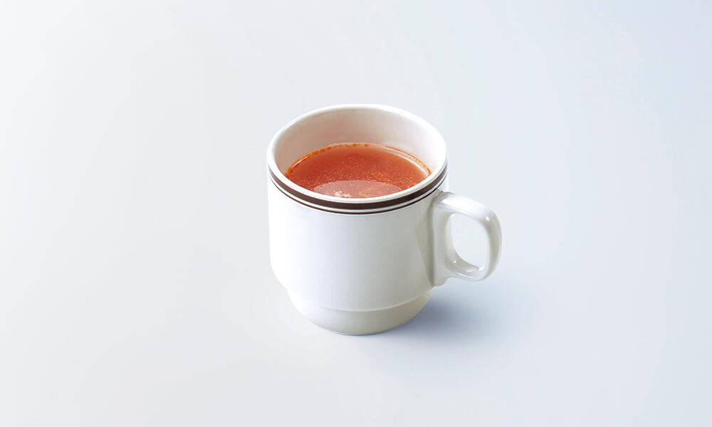
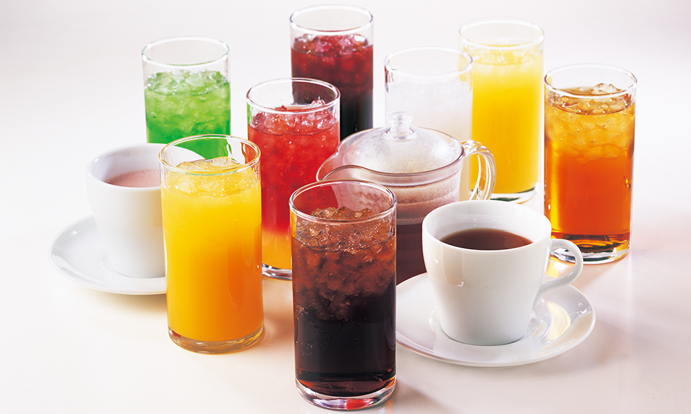

2. スープバー、ドリンクバーも楽しめる


スープバーでは日によってスープが違うので、何度行っても
スープバーの良さが楽しめるようになっています。
ドリンクバーはオレンジジュースやアイスコーヒーなど、
みんなが飲んで落ち着けるドリンクバーになっています。
料理が提供される際、下が鉄板のようになっているので
ハンバーグなど、良い温度で食べることが出来ます
↑上の料理は濃厚ビーフシチューの包み焼きハンバーグという
料理でハンバーグとビーフシチューの相性がばっちりで
是非食べてほしい一品です。
ドリンクバーはオレンジジュースやアイスコーヒーなど、
みんなが飲んで落ち着けるドリンクバーになっています。